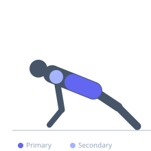
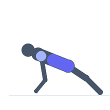

Exercise guide / Stir the Pot
Stir the Pot
Stir the pot is a Swiss ball core stability exercise developed by Dr. Stuart McGill in which the athlete maintains a plank position with forearms on the ball and moves the ball in circles, creating a combined anti-extension and anti-rotation core demand. The unstable surface of the ball dramatically increases muscle activation compared to a floor plank, while the circular motion forces the core to resist motion in multiple planes simultaneously. It is a highly effective anti-movement core exercise for athletes and advanced fitness populations.
Primary muscles
transverse abdominis
internal oblique
external oblique
Secondary muscles
rectus abdominis
erector spinae
deltoid anterior
Stabilizers
gluteus maximus
triceps long head
Equipment
Swiss Ball (Stability Ball / Exercise Ball)


Starting position
- Kneel behind a Swiss ball and place both forearms on the top of the ball, making fists or clasping hands. Walk the feet back until the body is in a straight plank line from head to feet.
Setup
- Use a properly inflated Swiss ball sized for your height (55 cm for shorter individuals, 65 cm for average height, 75 cm for taller). Ensure the ball is on a non-slip surface.
Steps
- Step 1: Set up in the forearm plank position on the Swiss ball.
- Step 2: Brace the entire core and ensure the body forms a straight line.
- Step 3: Begin slowly rolling the ball in a small clockwise circle using the forearms.
- Step 4: Keep the hips level and the lower back from sagging throughout each circle.
- Step 5: Complete the prescribed number of circles in one direction, then reverse direction.
Coaching cues
- Hips stay level — no rocking
- Rigid from shoulders to heels
- Small, controlled circles first
Breathing
- Breathe continuously throughout. Maintain the core brace without holding the breath.
Range of motion
- Start with small circles (20–30 cm diameter) and progress to larger circles as core strength improves.
Tempo
- 2–3 seconds per circle. Perform 5–10 circles per direction per set.
Common mistakes
- Allowing the hips to sag or pike during the circular motion
- Making circles that are too large — start small and increase diameter as strength improves
- Rotating the torso rather than keeping it rigid throughout
Safety
- Ensure the ball is on a non-slip surface to prevent it rolling away.
- Regress to a standard forearm plank if unable to maintain spinal neutrality.
Training
- strength: 5–10 reps
- endurance: 10–15 reps
- strength: 2–3 sets
- endurance: 3–4 sets
- Rest: {'strength': 90, 'endurance': 60}